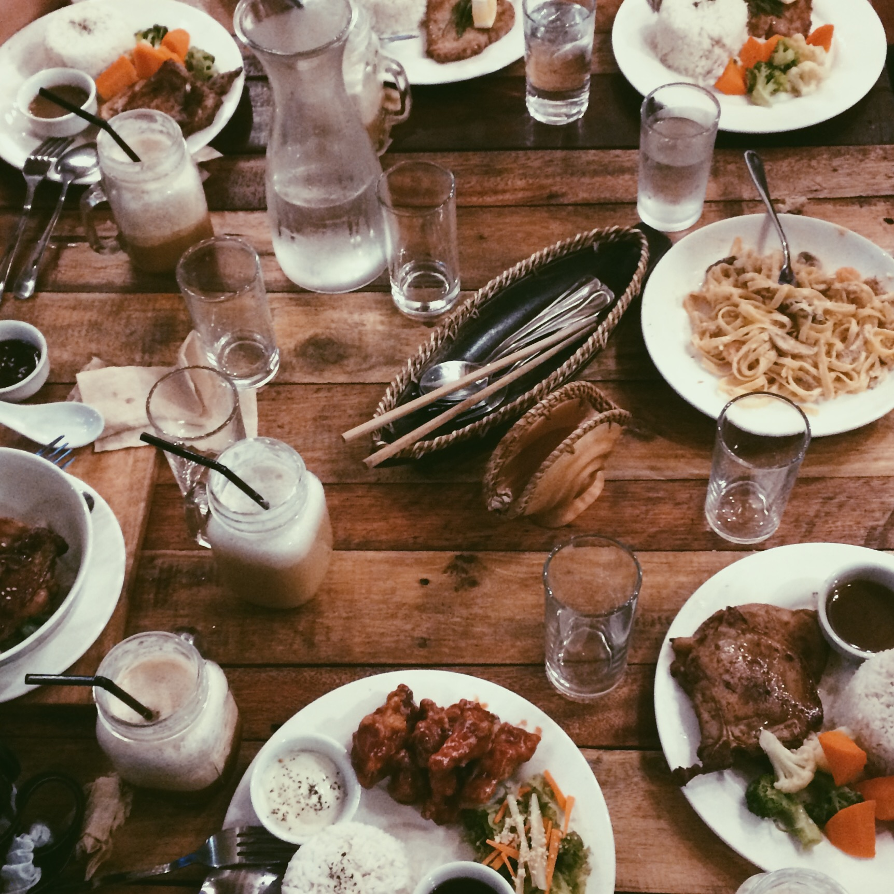
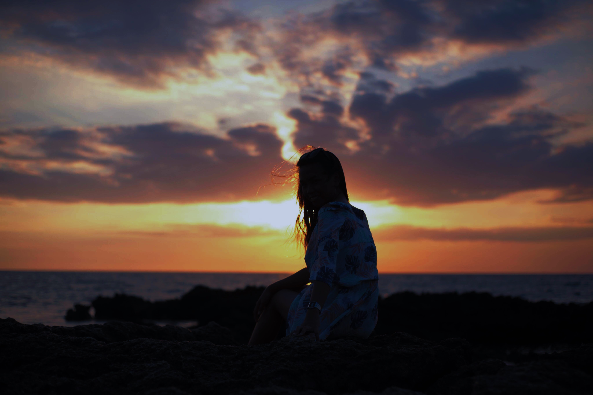

In San Juan, there are a lot of choices to go and to do. San Juan is one of the tourist spot here in La Union. There are a lot of activities like surfing,
I swear to you, San Juan has one of the best view of sunset here in La Union. I asure you that you'll go back sooner or later. :))) You should try it! As an Ilocano I encourage you! "Intayon bes!"
Visit us at Facebook: San Juan La Union Follw us at Instagram: @sanjuaelyu You can also e-mail us at sanjuanlaunion@gmail.com Places to eat and relax: